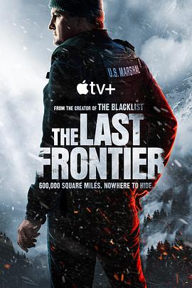

6.7
失序边缘
The Last Frontier
2025
美国
评分 6.7
导演:
约翰·卡兰 / 丹尼·高顿 / 杰西卡·洛瑞 / 山姆·哈格雷夫
演员:
杰森·克拉克 / 海莉·贝内特 / 多米尼克·库珀 / 西蒙娜·凯塞尔 / 阿尔法·伍达德 / 达拉斯·戈德托斯 / 泰特·布鲁姆
类型:
剧情,悬疑,惊悚
剧情简介
在阿拉斯加的崎岖荒野里，联邦监狱运输机突然坠毁，一群暴力罪犯借机逃离，打破了宁静城镇 Fairbanks 的安全格局。作为该地仅存的一名美国法警，弗兰克·瑞姆尼克（杰森·克拉克 饰）立即奔赴现场，面对藏匿在雪原与林间的逃犯，他决心守护自己曾发誓保护的小镇。与此同时，CIA 特工西德妮·斯科菲尔德（海莉·贝内特 饰）被派来协助调查，她与英俊冷峻的脱逃者利维·“哈夫洛克”·哈特曼（多米尼克·库珀 饰）之间的旧日关系逐渐浮出水面。哈夫洛克不仅拥有极端训练背景，更隐藏着有关“阿特沃特计划”的惊天秘密。在雪地追捕、直升机救援、破冰车追逐中，瑞姆尼克和西德妮不断逼近真相：事故或许并非意外，背后有更大的阴谋扯出。城镇断网、家人被绑、罪犯潜伏成内应、看似熟悉的盟友露出裂缝——整个荒原逐渐变成一座巨大的谜局。本剧最吸引人的是那份孤绝的北国荒原氛围：冰雪覆盖的道路、钻入林间的小径、囚犯在白夜中奔逃的身影，都让人在寒意中感到压迫。与之相配的还有情感线索——瑞姆尼克试图保护妻子与儿子，也试图掩藏自己心底的旧伤；西德妮则在忠诚与爱情之间挣扎。每一集中，不只是“抓逃犯”那么简单，更是在悬疑与信任之间抽丝剥茧，揭开人物动机，也挑战观众的道德判断。若你钟情于严冬、逃亡、阴谋，那么这部剧将带你穿越冰原，体验一场生存与救赎共舞的惊悚旅程。